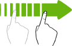
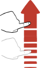
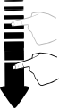

Tiempo 00 : 00 : 00 . 00 Play Parcial Stop    show sidebar Temporizador V 1.0 Tiempo Restante Segundos 0 30 59 handler Minutos 0 30 59 handler Horas 0 30 59 handler 00 : 00 : 00 . 00 Iniciar Reiniciar
Tiempo Restante Segundos 0 30 59 handler Minutos 0 30 59 handler Horas 0 30 59 handler 00 : 00 : 00 . 00 Iniciar Reiniciar